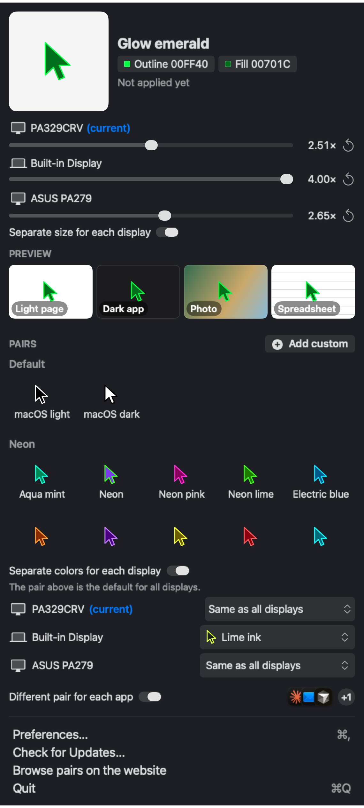

Mac pointer colors · Free app
Try outline and fill color pairs on a live macOS desktop, copy the hex codes, or apply one in a click with the free menu-bar app.
Pointer
The outline is what you’ll spot first on busy screens; the fill decides how the pointer feels against white pages and dark apps.
Add to Pointer Colors for Mac Opens the Mac app, if it's installed.
Pointer Colors for Mac · Free
A menu-bar app that applies any pair instantly. No hex codes, no digging through System Settings.
macOS 14 or later, on Apple silicon or Intel. The app is not notarized yet, so the first time, right-click it and choose Open, then click Open Anyway in System Settings › Privacy & Security. Or run this in Terminal, then open it as usual:
xattr -cr "/Applications/Pointer Colors.app"

Open System Settings › Accessibility › Display, scroll to Pointer, and set Pointer outline color and Pointer fill color with the hex codes from this page. Or use the free Pointer Colors app to apply a pair in one click.
Drag Pointer size in System Settings › Accessibility › Display, or use the size slider in Pointer Colors, which can also set a different size on each display.
Click Reset Colors under Pointer in System Settings › Accessibility › Display, or pick the macOS light or macOS dark pair on this page or in the app.
Pick a pair where the outline or the fill stands out on both white pages and dark apps. Check it on the four preview tiles; the app also warns when a pair is hard to see.
macOS keeps the pointer color and size settings in a protected Accessibility preferences file. Apps from outside the App Store can only change that file with Full Disk Access. Pointer Colors first tries Apple's own defaults tool, which usually works without it, and only asks when macOS blocks both. It only touches the pointer color, size and shake-to-find settings, reads no other files, and sends nothing anywhere.
Yes. The website and the Mac app are free and open source on GitHub. The app only changes the pointer settings macOS already has.